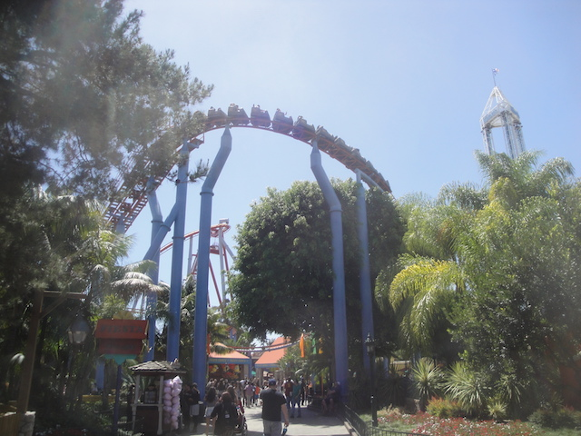

| |
Knotts Boysenberry Festival 2015
 All right. Time for another update. This was my 2nd trip to Knotts Berry Farm in 2015, which is so far the only park I've gone to so far (I'll go to SFMM soon enough. Just whenever I start giving a damn). Now this was a totally unexpected and spontaneous trip for me. I had heard about Knotts Boysenberry Festival and was looking for a time to go. Well, when you combinde the fact that I have to go down to L.A to run an errand and a friend is going to be at the park today, and BAM!!! I'm here at Knotts Berry Farm. And apparently, so is everyone else cause it is PACKED today!!! No seriously. I haven't seen Knotts this crowded in 9 YEARS!!!!
All right. Time for another update. This was my 2nd trip to Knotts Berry Farm in 2015, which is so far the only park I've gone to so far (I'll go to SFMM soon enough. Just whenever I start giving a damn). Now this was a totally unexpected and spontaneous trip for me. I had heard about Knotts Boysenberry Festival and was looking for a time to go. Well, when you combinde the fact that I have to go down to L.A to run an errand and a friend is going to be at the park today, and BAM!!! I'm here at Knotts Berry Farm. And apparently, so is everyone else cause it is PACKED today!!! No seriously. I haven't seen Knotts this crowded in 9 YEARS!!!!
Ooh. Rocky Mountain. I'm really hoping they stop at Knotts Berry Farm when they're finished with Twisted Collosus at Six Flags Magic Mountain. =)

Yeah. We won't be riding Jaguar today. Big Surprise.
 Waste of water!! Grab your pitchforks (and ignore the Almonds, Fracking, and Betrug that are using up all the water)!!!
Waste of water!! Grab your pitchforks (and ignore the Almonds, Fracking, and Betrug that are using up all the water)!!!
 Today's visit to Knotts is going to be less about the rides and more about the food.
Today's visit to Knotts is going to be less about the rides and more about the food.
 Believe it or not, that's actually one of the short lines. So, yeah. Let's ride this thing.
Believe it or not, that's actually one of the short lines. So, yeah. Let's ride this thing.
Here's my one little complaint. I'm a huge supporter of Fastpass as you all know. It's saved my ass at countless parks (La Ronde, Six Flags Over Texas, etc.), but this just seemed like a big mess. I know normally, it wouldn't be a big deal to just have a few people come up the exit for Fastpass, but when it's a group that's big enough to have their own ERT session clogging it up, it's really annoying. I'd personally rather have some merging point. But hey. Whatever.
 The world really needs more Schwarzkoph Shuttle Loops. Shame that this is the only one in the United States.
The world really needs more Schwarzkoph Shuttle Loops. Shame that this is the only one in the United States.
 Hey. Another ride at Knotts that I hadn't ridden. Meh, it's just a train narrated by Linus about going to camp.
Hey. Another ride at Knotts that I hadn't ridden. Meh, it's just a train narrated by Linus about going to camp.
Why exactly did I come here again?
 Yeah. Now lets get onto the real reason why I came here. The food (BTW, the Boysenberry Hot Dog was all right).
Yeah. Now lets get onto the real reason why I came here. The food (BTW, the Boysenberry Hot Dog was all right).
First up, the Fried Alligator Bites. Sweet. New Meat Credit. And I may hate to sound like a walking cliche, but it tastes like chicken.
I see a lot of people looking for some Boysenberry Goodness. =)
Here, we have the Spicy Boysenberry Wings and corn with Boysenberry Butter. I LOVED the Wings!!! Please let these become a permanent thing!!! And the corn is just corn with Boyseberry Butter, which tastes exactly how you think it does.
 "I don't need no stinking corn!! Just give me the butter raw! I'm eating the American Way!!" =)
"I don't need no stinking corn!! Just give me the butter raw! I'm eating the American Way!!" =)
 And they're kicking ass in the dessert department as well. As again, this Boysenberry Trifle was incredible.
And they're kicking ass in the dessert department as well. As again, this Boysenberry Trifle was incredible.
We also managed to do the Wine Tasting Festival. I tried some intersting things there including Chocolate Strawberry Wine which was good. Chocolaty with a wine after taste. This really strong and dry wine that I didn't care for. There was a Sparkling Rose Wine that I just absolutely loved. And finally, this Boysenberry Beer (pictured) that was really f*cking good. I swear, if all this was part of the permanent dining experience, Knotts would jump up quite a few spots on our Top 10 Theme Park Dining Options List.
"Why are those animals on instruments? And why is my vision all blurry? Crap, I think I drank too much."
Hey! Another thing at Knotts for me to explore. This should make some of my Haunt Friends very happy.
 Oh yeah. I keep forgetting that Knotts is building this new shooting dark ride. I'm looking foreword to coming back to check it out.
Oh yeah. I keep forgetting that Knotts is building this new shooting dark ride. I'm looking foreword to coming back to check it out.
 And of course, it wouldn't be a trip to Knotts Berry Farm without a ride on Xcelerator.
And of course, it wouldn't be a trip to Knotts Berry Farm without a ride on Xcelerator.
 Ooh. Special new entrance for Fast Pass. =)
Ooh. Special new entrance for Fast Pass. =)
 Xcelerator was crazy as usual. And that was our visit. I really enjoyed the Boysenberry Festival and really hope all these Boysenberry items stay or at least come back next year because I just LOVED a lot of what they had (the Wings, Beer, and Trifle).
Xcelerator was crazy as usual. And that was our visit. I really enjoyed the Boysenberry Festival and really hope all these Boysenberry items stay or at least come back next year because I just LOVED a lot of what they had (the Wings, Beer, and Trifle).
Home
|